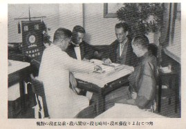
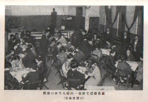
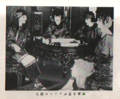

昭和初期、四六書院という出版社から「通叢書（つうそうしょ）」というシリーズが刊行された。この「通叢書」は、たとえば歌舞伎・新劇・ダンス・料理・酒・洋服・旅行など、各界の第一人者が、その道に関してうんちくを傾けたもの。
そして麻雀からは、当時、プレーヤーとして第一人者と云われた川崎備寛（かわさきびかん）が、麻雀の遊び方について執筆している。

入門書であるから、全体150ページほどのうち100ページほどが遊び方・ルールについての解説となっている。つまり後に川崎氏のベストセラーとなる「麻雀の打ち方」や「麻雀の勝ち方」のような戦術書ではない。
後半の50ページほどは、「感想と主張」というタイトルで、麻雀のルール（国士無双や立直）やら、雀技についての考えが述べてある。しかしこれについても、川崎備寛個人の感想というレベルのもの。そこでこれだけの話であれば、単なる「戦前の麻雀古書」ということになってしまう。しかし実はそうではない。
入門書でルールや遊び方、戦術書で雀技を知ることは出来ても、著者の麻雀に対する考え方を知ることは不可能である。しかし後半掲載の「感想と主張」で、川崎備寛氏の麻雀に対する考え方をよく知ることが出来る。
前述したように、川崎備寛といえば、当時、プレーヤーとして第一人者と云われた人物。また当時創設された日本麻雀連盟の幹部でもある。
かわさき びかん【川崎備寛】Ｍ24年、大阪府に生まれる。関西大学(政治部)中退後、文筆活動に入り文壇で注目される。大正中期、麻雀が本格的に伝来。日ならずして手を染める。Ｓ４年、日本麻雀連盟創立とともに参加。同時に中央委員となる。Ｓ５年、当時の最高段位、７段となる。第二次大戦後のＳ23年、同連盟再建にあたり、関東本部幹事長に就任。Ｓ28年理事長。Ｓ34年副総裁。Ｓ36年、同連盟最初の九段。Ｓ38年３月逝去。死後、名人位を追贈される。その著「麻雀の打ち方(S24大泉書店)」は第二次大戦後の戦術書ベスト10中の１冊。
こういう人物であるから、σ(-_-)のような麻雀研究者にとっては、その人となりを知る重要な資料になる。またこの本には、当時の麻雀界の貴重な写真が何枚も掲載されている。たとえば下記は、当時の麻雀界のお偉方の貴重な対局風景。一番右側が佐藤５段、正面着物姿が川崎７段、正面左側が日本麻雀連盟創立者の空閑緑８段、左端の白い洋服が前島吾郎５段である。

↓これは当時行われた第１回女性麻雀大会の模様。この本には書いてないが、たしかこの第１回大会で優勝したのは、責任者である空閑緑８段の愛娘、空閑智恵子さん（当時18才）だった記憶（ちと記憶モード）。

↓これは当時のアメリカでの女性対局風景。みんなチャイナドレスを着て、家具も中国調。中国ムードを満喫している。というわけで麻雀古書としては貴重な１冊。

|